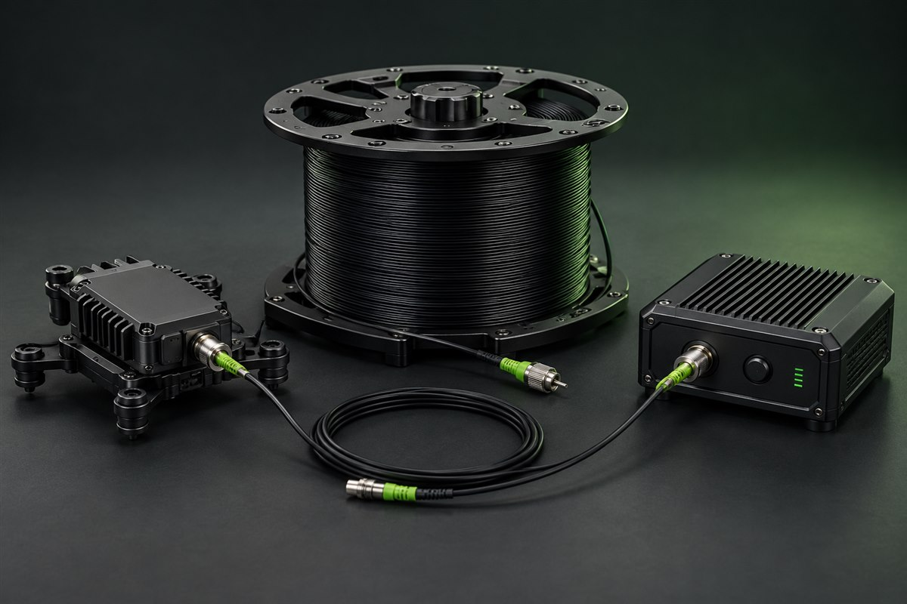

XFDrone · Catálogo
Sistemas de fibra óptica para FPV
Catálogo de kits de comunicación por fibra, carretes para UAV y módulos ópticos destinados a proyectos FPV.
Ver opciones en XFDrone
- Carretes y kits de fibra para plataformas UAV.
- Opciones de longitud para distintos proyectos.
- Módulos aéreos y de tierra dentro del catálogo.
- Soluciones integradas para enlaces de video y control.
- Consulta conectores y compatibilidad antes de comprar.
- La disponibilidad puede variar por país.